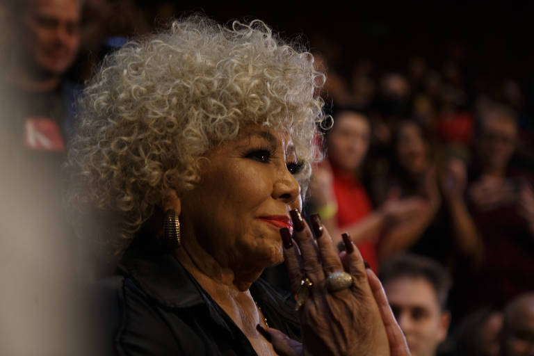
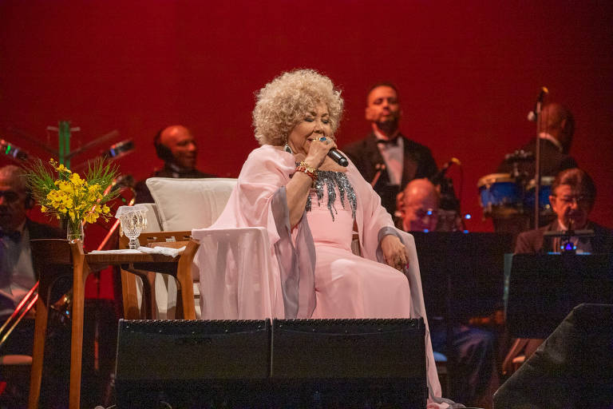

Alcione é homenageada pelo Prêmio da Música Brasileira e louvada por artistas em sarau
Apresentada por Felipe Neto e Lázaro Ramos, premiação acontece no Municipal do Rio e teve quase 10 mil
inscritos

Por Gustavo Zeitel
"Estão querendo me matar do coração", diz Alcione. No início do ano, a cantora de 75 anos soube
que seria tema do enredo da Estação Primeira de Mangueira. Agora, ela é a homenageada da 30ª
edição do Prêmio da Música Brasileira. A entrega das premiações está marcada para o dia 31 de
maio no Theatro Municipal do Rio de Janeiro, mas as homenagens vão além de uma única noite.
Na última quarta-feira, o prêmio organizou um jantar ao redor de Alcione no Hotel Fasano, na
zona sul carioca. Artistas de diferentes linguagens e gerações, como Gilberto Gil, Fernanda
Montenegro, Zé Ibarra e Luedji Luna, prestigiaram a noite, em que a cantora participou de um
sarau com Diogo Nogueira e Pedro Sampaio. "O samba não é fácil, não", ela diz. "Cantar samba é
algo complexo, com toda a divisão rítmica que nós brasileiros fazemos, a música para nós não é
aquilo que se lê."
Neste ano, o prêmio teve a adesão recorde de quase 10 mil inscrições. À frente do projeto desde
1987, José Maurício Machline ganha agora a parceria da empresária Heloisa Guarita, que tem
planos de fomentar a produção musical ao longo do ano.

A organização do evento pretende viajar o país para entender quem são os artistas indicados
e as
diferentes expressões musicais de cada região. "Houve uma mudança radical de mídia e a
diminuição do custo de produção, isso democratizou a forma de fazer música de um modo muito
impactante", afirma Machline.
Depois de um interlúdio de três anos, os indicados do prêmio representam 18 estados do país em
31 categorias. Acompanhando as transformações da sociedade, o prêmio excluiu a categoria de
melhor cantor ou cantora, substituindo o termo por "intérprete", abrangendo assim artistas
não-binários. As categorias pop, rock, reggae e hip hop foram unificadas em duas categorias
—pop/rock e música urbana—, e melhor DVD passa a se chamar melhor produto audiovisual.
Apresentada por Felipe Neto e Lázaro Ramos, a noite de premiação terá o curioso dueto de Maria
Bethânia e Gloria Groove. Marina Sena cantará ao lado de Luedji Luna e a nova geração da música
brasileira será representada pelo trio Tim Bernardes, Zé Ibarra e Fran. Alcione vai cantar cinco
músicas, incluindo o clássico "A Loba", de matizes autobiográficas. "A loba é essa mulher que
quer estar na dela, que gosta de proteger sua família, a loba é uma mulher comum", afirma
Alcione.